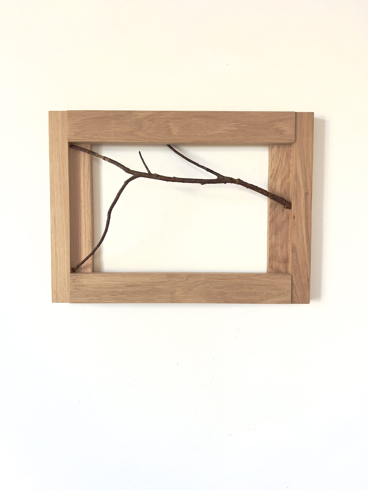

Encounter, Tailhos, no. 7, 2025
Cherry branch, chestnut wood frame, silk thread, love, time.
Text by Asya YaghmurianEncounter, Tailhos, no. 7 is a work from Being Seen Being, which explores a fleeting moment of encounter between the human and the forest. For Gouws, both human and forest exist in the same condition: being present while being witnessed. The title describes a moment of reciprocal encounter: you see the forest at one instant in its evolution, while the forest, through the bound branches, sees you at one instant in yours.
All works in the exhibition were created during Gouws’ residency in France, born from daily walks through the forest. The works in the exhibition hold fragments from the chestnut woods of Tailhos that reveal the particular geometry of branches and twigs at the moment of capture. Cherry branches, which inhabit the same forest territory as the chestnuts, are held within chestnut-wood frames and bound with silk threads. Chestnut husks with their spined shells split open after autumn’s fall appear alongside wooden weaving shuttles, a tool that has carried thread through the warp of looms for centuries.
The chestnut forest of Tailhos carries its own history of use and abandonment. Planted generations ago as the area’s primary food source, these trees were cut down in the 1970s when industrial food systems reached the region. But chestnuts regenerate vigorously. Where one trunk was felled, five more grew from the roots, creating today’s dense woodland. A tangle growing across hills and valleys, a forest that remade itself after human intervention ceased. Gouws worked with what this forest offered, the trees that speak to both human exploitation of the land and nature’s persistence in reclaiming its own territory.
For Gouws, working in Tailhos resonated with family history. In the 1600s, southern France was home to many Huguenots, Protestant communities that included skilled weavers. When Louis XIV revoked the Edict of Nantes in 1685, outlawing the Protestant faith, thousands fled. Among them were weaving families who carried their textile traditions to new lands. While some went north to the Netherlands or England, Gouws’ ancestors journeyed to the Cape of Good Hope, taking with them their craft and faith.
The knowledge of craft and forest regeneration operate as forms of material intelligence, bearing witness to histories of displacement and resilience. Chestnut wood, cherry branches, silk thread, and husks mark a specific place and moment, while the weaving shuttles connect to generations of making and craft. The eight works in the show map different moments of attention. In Gouws’ works, the forest holds agency; it participates by holding its own qualities and presence in relation to the viewer.
This understanding extends to the encounter with the artwork itself. Each piece holds its own moment while meeting yours. The same reciprocal relation that exists between the observer and the forest exists between the observer and the artwork.
Being-seen-being names this condition shared by forest, artwork, and viewer. All three exist simultaneously as observers and observed, refusing a clear division between subject and object. Or furthermore, being is conditioned on also being seen. If a tree falls in a forest, and no one hears it, did the tree fall? Being is always conditioned by others’ experience of our being, emerging as a shared practice of reciprocation and acknowledgement of Self through the Other. What Gouws captures is the crossing point where two evolving systems briefly meet, acknowledge each other’s presence and qualities, and continue on their separate paths.